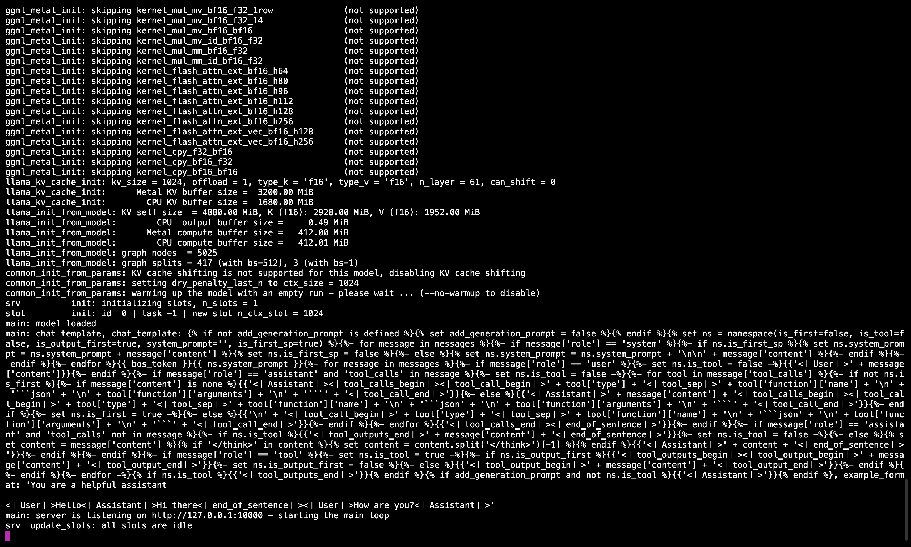

🐋 Run Deepseek R1 Dynamic 1,58 bit com llama.cpp
Um grande grito paraUnlothaipor seus esforços incríveis! Graças ao seu trabalho duro, agora podemos executar oDeepseek-r1 completo671b Modelo de parâmetros em sua forma quantizada dinâmica de 1,58 bits (compactada a apenas 131 GB) emLlama.cpp! E a melhor parte? Você não precisa mais se desesperar em precisar de GPUs ou servidores de classe empresarial maciça-é possível executar esse modelo em sua máquina pessoal (embora lentamente para a maioria dos hardware de consumo).
O único verdadeiroDeepseek-r1modelo em ollama é oVersão 671BDisponível aqui:https://ollama.com/library/deepseek-r1:671b. Outras versões sãodestiladomodelos.
Este guia se concentra em executar oModelo Quantizado de 1,58 bits dinâmico de Deepseek-R1 completousandoLlama.cppintegrado comNullcore. Para este tutorial, demonstraremos as etapas com umM4 max + 128 GB de RAMmáquina. Você pode adaptar as configurações à sua própria configuração.
Etapa 1: instale llama.cpp
Você pode:
- Baixe os binários pré -construídos
- Ou construa você mesmo: Siga as instruções aqui:Guia de construção llama.cpp
Etapa 2: Baixe o modelo fornecido por Unlothai
Vá atéPágina de rosto abraçada de Unslothe baixar o apropriadoversão quantizada dinâmicade Deepseek-R1. Para este tutorial, usaremos o1,58 bit (131 GB)A versão, que é altamente otimizada, mas permanece surpreendentemente funcional.
Conheça o seu "diretório de trabalho" - onde seu script python ou sessão de terminal está em execução. Os arquivos do modelo serão baixados para uma subpasta desse diretório por padrão, portanto, certifique -se de saber o caminho! Por exemplo, se você está executando o comando abaixo em/Users/yourname/Documents/projects, seu modelo baixado será salvo em/Users/yourname/Documents/projects/DeepSeek-R1-GGUF
Para entender mais sobre o processo de desenvolvimento da UNSLOTHAI e por que essas versões quantizadas dinâmicas são tão eficientes, confira a postagem do blog:UNSLOTHAI DEEPSEEK R1 quantização dinâmica
Veja como baixar o modelo programaticamente:
# Instale as dependências do rosto de abraço antes de executar o seguinte:
# pip install huggingface_hub hf_transfer
dehuggingface_hubimportarSnapshot_download
Snapshot_download
repo_id "Unsloth/Deepseek-R1-GGUF", Assim, # Especifique o Repo Abraçando o rosto
LOCAL_DIR "Deepseek-R1-GGUF", Assim, # O modelo será baixado neste diretório
allow_patterns [["*Ud-iq1_s*", Assim, # Faça o download apenas da versão de 1,58 bits
Depois que o download concluir, você encontrará os arquivos de modelo em uma estrutura de diretório como esta:
Deepseek-R1-GGUF/
├── Deepseek-R1-UD-IQ1_S/
│ ├── DeepSeek-R1-UD-IQ1_S-00001-O-00003.GGUF
│ ├── Deepseek-R1-UD-IQ1_S-00002-de-00003.gguf
│ ├── Deepseek-R1-UD-IQ1_S-00003-de-00003.gguf
🛠️ Atualizar caminhos nas etapas posteriores paraCombine sua estrutura de diretório específica. Por exemplo, se seu script estivesse em/Users/tim/Downloads, o caminho completo para o arquivo GGUF seria:
/Users/tim/Downloads/DeepSeek-R1-GGUF/DeepSeek-R1-UD-IQ1_S/DeepSeek-R1-UD-IQ1_S-00001-of-00003.gguf
Etapa 3: verifique se a webui aberta está instalada e em execução
Se você ainda não temNullcoreInstalado, não se preocupe! É uma configuração simples. Basta seguir oAbra a documentação da Webui aqui. Depois de instalado, inicie o aplicativo-nós o conectaremos em uma etapa posterior para interagir com o modelo Deepseek-R1.
Etapa 4: sirva o modelo usando llama.cpp
Agora que o modelo é baixado, o próximo passo é executá -lo usandoModo de servidor do LLAMA.CPP. Antes de começar:
-
Localize o
llama-serverbinário.
Se você construiu a partir da fonte (conforme descrito na etapa 1), ollama-serverexecutável estará localizado emllama.cpp/build/bin. Navegar para este diretório usando ocdcomando:CD [Path toSubstituir
[path-to-llama-cpp]com o local onde você clonou ou construiu llama.cpp. Por exemplo:cd ~/documents/workspace/llama.cpp/build/bin -
Aponte para a sua pasta modelo.
Use o caminho completo para os arquivos GGUF baixados criados na etapa 2. Ao servir o modelo, especifique a primeira parte dos arquivos GGUF divididos (por exemplo,, por exemplo,DeepSeek-R1-UD-IQ1_S-00001-of-00003.gguf
Aqui está o comando para iniciar o servidor:
./llama-server \
-Model/,/Diretório
--port 10000 \
-CTX 1024 \
--n-GPU-camadas 40
Parâmetros a serem personalizados com base em sua máquina:
--modelSubstituir/[your-directory]/Com o caminho em que os arquivos GGUF foram baixados na etapa 2.--portO padrão do servidor é8080, mas sinta -se à vontade para alterá -lo com base na disponibilidade da sua porta.--ctx-sizeDetermina o comprimento do contexto (número de tokens). Você pode aumentá -lo se o seu hardware permitir, mas seja cauteloso com o aumento do uso do RAM/VRAM.--n-gpu-layersDefina o número de camadas que você deseja descarregar na sua GPU para uma inferência mais rápida. O número exato depende da capacidade de memória da sua GPU - referência à tabela da UNSLOTH para recomendações específicas.
Por exemplo, se o seu modelo foi baixado para/Users/tim/Documents/workspace, seu comando seria assim:
./llama-server \
---model /users/tim/documents/workspace/deepseek-r1-gguf/deepseek-r1-ud-iq1_s/deepseek-r1-ud-iq1_s-00001-of-00003.gguf \
--port 10000 \
-CTX 1024 \
--n-GPU-camadas 40
Quando o servidor começar, ele hospedará umAPI local compatível com o OpenAIendpoint em:
http://127.0.0.1:10000
Servidor llama.cpp em execução

Depois de executar o comando, você deve ver uma mensagem confirmando que o servidor está ativo e ouvindo na porta 10000.
Certifique -se deMantenha esta sessão de terminal em execução, como serve ao modelo para todas as etapas subsequentes.
Etapa 5: Conecte o llama.cpp para abrir o Webui
- Vá paraConfigurações do administradorem webui aberto.
- Navegar paraConexões> Conexões OpenAI.
- Adicione os seguintes detalhes para a nova conexão:
- URL:
http://127.0.0.1:10000/v1(ouhttp://host.docker.internal:10000/v1Ao executar o Open Webui em Docker) - Chave da API:
none
- URL:
Adicionando conexão em webui aberto

Depois de executar o comando, você deve ver uma mensagem confirmando que o servidor está ativo e ouvindo na porta 10000.
Depois que a conexão é salva, você pode começar a consultarDeepseek-r1Diretamente do Open Webui! 🎉
Exemplo: gerando respostas
Agora você pode usar a interface de bate -papo do Open Webui para interagir com oModelo Dinâmico de 1,58 bits de Deepseek-R1

Notas e considerações
-
Desempenho:
Executando um modelo enorme de 131 GB como Deepseek-R1 em hardware pessoal serálento. Mesmo com o nosso M4 Max (128 GB de RAM), as velocidades de inferência foram modestas. Mas o fato de funcionar é uma prova das otimizações de Unslothai. -
Requisitos de VRAM/Memória:
Certifique -se de VRAM e RAM de sistema suficientes para o desempenho ideal. Com configurações de GPUs ou CPU de ponta, espere velocidades mais lentas (mas ainda é factível!).
Obrigado aUnlothaieLlama.cpp, executando um dos maiores modelos de raciocínio de código aberto,Deepseek-r1(Versão de 1,58 bits), está finalmente acessível a indivíduos. Embora seja um desafio executar esses modelos no hardware do consumidor, a capacidade de fazê -lo sem infraestrutura computacional maciça é um marco tecnológico significativo.
⭐ Muito obrigado à comunidade por ultrapassar os limites da pesquisa aberta da IA.
Feliz experimento! 🚀